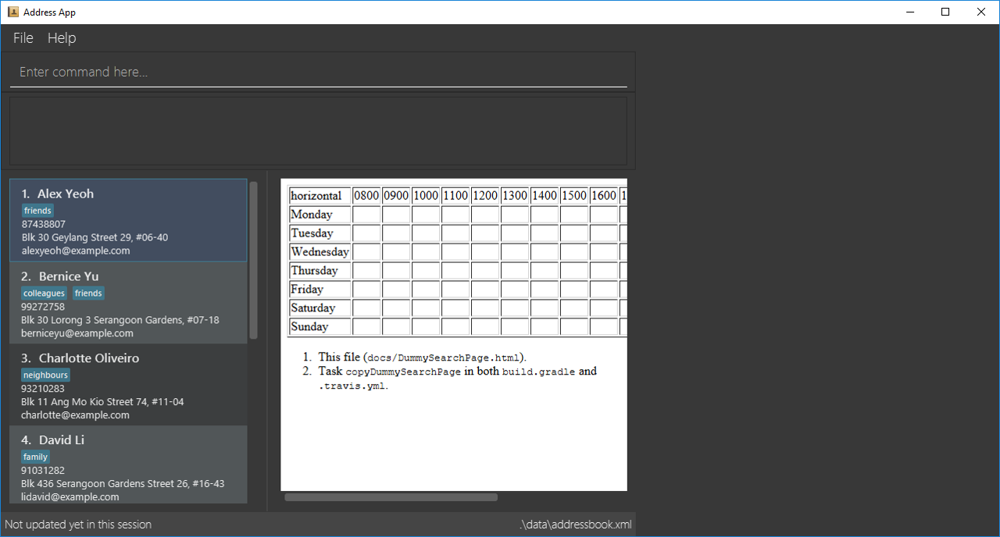

By: Team SE-EDU Since: Jun 2016 Licence: MIT
- 1. Introduction
- 2. Quick Start
- 3. Features
- 4. common
- 5. Person
- 5.1. Adding a person:
add - 5.2. Listing all persons and groups :
list - 5.3. Editing a person :
edit - 5.4. Locating persons by name:
find - 5.5. Deleting a person :
delete - 5.6. Selecting a person :
select - 5.7. Listing entered commands :
history - 5.8. Undoing previous command :
undo - 5.9. Redoing the previously undone command :
redo - 5.10. Clearing all entries :
clear - 5.11. List all groups friend is in :
grouplist
- 5.1. Adding a person:
- 6. Timetable(Wen Kai)
- 7. Groups (Melodies)
- 8. Find common time slot in group (Nigel)
- 9. Security (Leslie)
- 9.1. Create an account:
create - 9.2. login to an account :
login - 9.3. Changing password: `update_pw `
- 9.4. Encrypt timetable data : `encrypt `
- 9.5. Decrypt timetable data : `decrypt `
- 9.6. get Security question password :
get - 9.7. Reset password :
reset - 9.8. Changing security question and answer :
update_sq - 9.9. Suggest, Requesting new password
[coming in v2.0]
- 9.1. Create an account:
- 10. FAQ
- 11. Command Summary
1. Introduction
NUS Hangs is for those who Wants to find a convenient time slot for the people who are joining his/her event. More importantly, NUS Hangs is optimized for those who prefer to work with a Command Line Interface (CLI) while still having the benefits of a Graphical User Interface (GUI). If you can type fast,NUS Hangs can get your contact management tasks done faster than traditional GUI apps. Interested? Jump to the Section 2, “Quick Start” to get started. Enjoy!
2. Quick Start
-
Ensure you have Java version
9or later installed in your Computer. -
Download the latest
addressbook.jarhere. -
Copy the file to the folder you want to use as the home folder for Nus Hangs.
-
Double-click the file to start the app. The GUI should appear in a few seconds.
 -
Type the command in the command box and press Enter to execute it.
e.g. typinghelpand pressing Enter will open the help window. -
Some example commands you can try:
-
list_friends: lists all friends you added -
add_friendadd u/Damith C. Rajapakse: adds a friend named `Damith C. Rajapakse ` to Erium. -
delete3: deletes the 3rd friend shown in the current friend list -
exit: exits the app
-
-
Refer to Section 3, “Features” for details of each command.
3. Features
Command Format
-
Words in
UPPER_CASEare the parameters to be supplied by the user e.g. inn/NAME_OF_FRIEND,NAME_OF_FRIENDis a parameter which can be used asadd n/John Doe. -
Items in square brackets are optional e.g
n/NAME [i/INDEX_OF_TIMETABLE]can be used asn/John Doe i/1or asn/John Doe. -
Items in square brackets /\ square brackets means have to choose either left choice or right choice e.g
add_timetable [f/FILENAME l/FILE_LOCATION ] /\ [o/LINK]can be used asadd_timetable f/mytimetable.png l/C://Users/abc/mysecretstashoradd_timetable o/http://modsn.us/wJsFcbut notadd_timetable f/mytimetable.png l/C://Users/abc/mysecretstash o/http://modsn.us/wJsFc -
Parameters can be in any order e.g. if the command specifies
n/NAME_OF_FRIEND i/INDEX_OF_TIMETABLE,i/INDEX_OF_TIMETABLE n/NAME_OF_FRIENDis also acceptable.
4. common
4.1. Viewing help : help
Format: help
4.2. Exiting the program : exit
Exits the program.
Format: exit
4.3. Saving the data
Address book data are saved in the hard disk automatically after any command that changes the data.
There is no need to save manually.
5. Person
5.1. Adding a person: add
Adds a person to the address book
Format: add n/NAME p/PHONE_NUMBER e/EMAIL a/ADDRESS [t/TAG]…
| A person can have any number of tags (including 0) |
Examples:
-
add n/John Doe p/98765432 e/johnd@example.com a/John street, block 123, #01-01 -
add n/Betsy Crowe t/friend e/betsycrowe@example.com a/Newgate Prison p/1234567 t/criminal
5.2. Listing all persons and groups : list
Shows a list of all persons and all groups in the address book.
Format: list
5.3. Editing a person : edit
Edits an existing person in the address book.
Format: edit INDEX [n/NAME] [p/PHONE] [e/EMAIL] [a/ADDRESS] [f/FORMAT]
[sl/STORED_LOCATION] [dl/DOWNLOAD_LOCATION] [t/TAG]…
Examples:
-
edit 1 p/91234567 e/johndoe@example.com
Edits the phone number and email address of the 1st person to be91234567andjohndoe@example.comrespectively. -
edit 2 n/Betsy Crower t/
Edits the name of the 2nd person to beBetsy Crowerand clears all existing tags. -
edit 1 f/vertical sl/C:\Users\admin\Downloads\cs2103\tiredAndSadness
Edits the format and stored location of the 1st person to beverticalandC:/Users/admin/Downloads/cs2103/tiredAndSadness/respectively.
5.4. Locating persons by name: find
Finds persons whose names contain any of the given keywords.
Format: find KEYWORD [MORE_KEYWORDS]
Examples:
-
find John
ReturnsjohnandJohn Doe -
find Betsy Tim John
Returns any person having namesBetsy,Tim, orJohn
5.5. Deleting a person : delete
Deletes the specified person from the address book.
Format: delete INDEX
Examples:
-
list
delete 2
Deletes the 2nd person in the address book. -
find Betsy
delete 1
Deletes the 1st person in the results of thefindcommand.
5.6. Selecting a person : select
Selects the person identified by the index number used in the displayed person list.
Format: select INDEX
Examples:
-
list
select 2
Selects the 2nd person in the address book. -
find Betsy
select 1
Selects the 1st person in the results of thefindcommand.
5.7. Listing entered commands : history
Lists all the commands that you have entered in reverse chronological order.
Format: history
|
Pressing the ↑ and ↓ arrows will display the previous and next input respectively in the command box. |
5.8. Undoing previous command : undo
Restores the address book to the state before the previous undoable command was executed.
Format: undo
|
Undoable commands: those commands that modify the address book’s content ( |
Examples:
-
delete 1
list
undo(reverses thedelete 1command) -
select 1
list
undo
Theundocommand fails as there are no undoable commands executed previously. -
delete 1
clear
undo(reverses theclearcommand)
undo(reverses thedelete 1command)
5.9. Redoing the previously undone command : redo
Reverses the most recent undo command.
Format: redo
Examples:
-
delete 1
undo(reverses thedelete 1command)
redo(reapplies thedelete 1command) -
delete 1
redo
Theredocommand fails as there are noundocommands executed previously. -
delete 1
clear
undo(reverses theclearcommand)
undo(reverses thedelete 1command)
redo(reapplies thedelete 1command)
redo(reapplies theclearcommand)
5.10. Clearing all entries : clear
Clears all entries from the address book.
Format: clear
5.11. List all groups friend is in : grouplist
Shows a list of all groups a friend is in.
Format: grouplist
6. Timetable(Wen Kai)
6.1. Adding a timetable: add_timetable
add a timetable from the stored folder in NUS Hangs
Format: `add_timetable INDEX `
Examples:
-
add_timetable 1
6.2. Download timetable : download_timetable
Download a timetable in the System as a png file or csv file in the format of the person.+ Format: `download_timetable INDEX p/PASSWORD `
Examples:
-
download_timetable 1 p/password
6.3. Deleting a timetable : delete_timetable
Delete a timetable in the system by index
Format: delete_timetable INDEX p/password
Examples:
-
list_timetable
delete_timetable 2 p/password
Deletes the 2nd timetable in the address book. -
find_timetable Betsy
delete_timetable 1 p/password
Deletes the 1st timetable in the results of thefind_timetablecommand.
7. Groups (Melodies)
7.1. Adding a group: add_group
Add a group to the System
Format: add_group n/GROUPNAME d/GROUPDESCRIPTION `
Examples:
-
add_group n/happyfriends d/a group of happy friends
7.2. Editing a group : edit_group
Edit a group’s details. There must be at least 1 field non-empty.
If field is empty, system assumes that the field remains unedited.
Format: edit_group OLDGROUPNAME [n/NEWGROUPNAME] [d/NEWGROUPDESCRIPTION]
Examples:
-
edit_group happyfriends n/sadfriends d/sad because of cs2103 -
edit_group happyfriends d/very sad because of cs2103
7.3. Locating group by name: find_group
Find a group’s index whose names contain any of the given keywords
Format: find_group KEYWORD [MORE_KEYWORDS]
Examples:
-
find_group John
Returnsjohn familyandJohn House -
find_group Betsy Tim John
Returns any group having namesBetsy,Tim, orJohn
7.4. Deleting a group : delete_group
Delete a group in the system by name
Format: `delete_group n/GROUPNAME `
Examples:
-
delete_group n/happyfriends
7.5. List all persons of a group : view_group
shows a list of all persons in a group
Format: view_group n/GROUP_NAME
Examples:
-
` view_group n/happyfriends`
7.6. Add a person to group : register
Adds a person to a group if the status of the group is open.
Format: register FRIEND_INDEX n/GROUP_NAME
Examples:
-
`register 1 n/happyfriends `
7.7. Delete a person from group : delete_member
Delete a person from a group using member index displayed with view_group.
Format: delete_member MEMBER_INDEX n/GROUP_NAME
Examples:
-
view_group n/happyfriends -
delete_member 1 n/happyfriends
deletes the 1st person displayed in view_group command.
8. Find common time slot in group (Nigel)
8.1. Find kth best common time slot in group: find_time
Find the kth best available time slot of all the people in the group you are in
Format: `find k/KTH_BEST g/GROUPINDEX `
Examples:
-
find k/1 g/1
9. Security (Leslie)
9.1. Create an account: create
Create an account in the system. The password and security answer are both case sensitive.
Format: create u/USERNAME pw/PASSWORD
Examples:
-
create u/sampleUser pw/dontUseWeakPassword
9.2. login to an account : login
Login into the system.
Format: login u/USERNAME pw/PASSWORD
Examples:
-
login u/username pw/dontUseWeakPassword
9.3. Changing password: `update_pw `
Change the user password, requires user to be logged in first.
Format: update_pw c/CURRENT_PASSWORD n/NEW_PASSWORD
Examples:
-
update_pw c/password n/newpass
9.4. Encrypt timetable data : `encrypt `
Encrypt a timetable, requires user to be logged in first.
Format: encrypt t/TIMETABLE_INDEX
Examples:
-
encrypt t/1
9.5. Decrypt timetable data : `decrypt `
Decrypt a timetable, requires user to be logged in first.
Format: decrypt t/TIMETABLE_INDEX
Examples:
-
decrypt t/1
9.6. get Security question password : get
Shows the security question .
Format: get
9.7. Reset password : reset
Resets a password by answering the security question correctly.
Format: reset a/SECURITY_ANSWER n/NEW_PASSWORD
Examples:
-
reset a/Near the moon
9.8. Changing security question and answer : update_sq
Change the user security question and answer, requires user to be logged in first.
Format: update_sq c/CURRENT_PASSWORD [n/NEWSECURITY_QUESTION] [a/SECURITY_ANSWER]
Examples:
-
update_pw c/password n/why me? a/because it is cs2103
10. FAQ
Q: How do I transfer my data to another Computer?
A: Install the app in the other computer and overwrite the empty data file it creates with the file that contains the data of your previous Address Book folder.
11. Command Summary
-
help :
help -
Add_friend
add_friend n/NAME_OF_FRIEND [t/TEXT_FILE l/TEXT_FILE_LOCATION] [i/INDEX_OF_TIMETABLE]
e.g.add u/Damith C. Rajapakse [i/1] [t/friends.txt l/C://Users/abc/mysecretstash] -
list_friends :
list_friends -
edit_friend :
edit_friend [n/NEW_NAME] i/INDEX_OF_FRIEND [t/TIMETABLE_INDEX]
e.g.edit_friend [n/iamgod] i/1 [t/1] -
find_friend :
find_friend KEYWORD [MORE_KEYWORDS]
e.g.find_friend James Jake -
delete_friend :
delete i/INDEX_OF_FRIEND
e.g.delete_friend 3 -
clear_friend :
clear_friend -
grouplist :
listgroup -
add_timetable
add_timetable INDEX `
e.g. `add_timetable 1 -
download_timetable :
download_timetable INDEX
e.g.download_timetable 1 l/C://Users/abc/mysecretstash -
delete_timetable :
delete INDEX p/password
e.g.delete_timetable 3 p/password -
add_group
add_group g/GROUPNAME d/GROUPDESCRIPTION m/MAXNUMBEROFPEOPLE
e.g.add_group g/happyfriends d/a group of happy friends m/3 -
list_groups :
list_groups -
edit_group :
edit_group i/GROUPINDEX [g/NEWGROUPNAME] [d/NEWGROUPDESCRIPTION] [m/NEWMAXNUMBEROFPEOPLE] [s/STATUS]
e.g.edit_group i/1 g/sadfriends d/sad because of cs2103 s/closed -
find_group :
find_friend KEYWORD [MORE_KEYWORDS]
e.g.find_group James Jake -
delete_group :
delete i/INDEX_OF_FRIEND
e.g.delete_group 3 -
clear_groups :
clear_groups -
viewgroup :
view_group i/GROUP_INDEX+ e.g.viewgroup 3 -
register
register f/FRIEND_INDEX g/GROUP_INDEX
e.g.register f/1 g/1 -
find_time :
find k/KTH_BEST g/GROUPINDEX
e.g.find k/1 g/1 -
create :
create u/USERNAME p/PASSWORD e/EMAIL q/SECURITY_QUESTION a/SECURITY_ANSWER
e.g.create u/iamgod p/kamisama e/enel@skypiea.com q/Where is fairy vearth? a/Near the moon -
login :
login u/USERNAME p/PASSWORD
e.g.login u/James Jake p/gg -
update_pw :
update_pw c/CURRENT_PASSWORD n/NEW_PASSWORD
e.g.update_pw c/password n/newpass -
encrypt :
encrypt t/TIMETABLE_INDEX
e.g.encrypt t/1 -
decrypt :
decrypt t/TIMETABLE_INDEX
e.g.decrypt t/1 -
get :
get -
reset :
reset a/SECURITY_ANSWER n/NEW_PASSWORD
e.g.reset a/SECURITY_ANSWER n/NEW_PASSWORD -
update_sq :
update_sq c/CURRENT_PASSWORD [n/NEWSECURITY_QUESTION] [a/SECURITY_ANSWER]
e.g.update_pw c/password n/why me? a/because it is cs2103